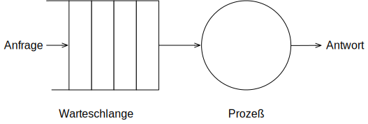
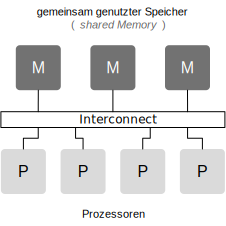
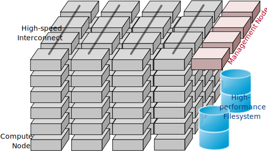
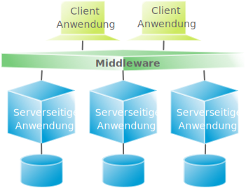

Terminologie verteilter Systeme

Ein weitgefasster Überblick über verteilte Systeme.
michael.eichberg@dhbw.de, Raum 149B
1.0
Dieser Foliensatz basiert in Teilen auf Folien von:
Maarten van Steen (Veröffentlicht zum Buch Distributed Systems)
Henning Pagnia (basierend auf seiner Vorlesung Verteilte Systeme).
Alle Fehler sind meine eigenen.
Ergänzend bzw. für interessierte Studierende:
Distributed vs Decentralized
Zentralisierte Lösungen lassen sich nicht skalieren
Es gilt zwischen logischer und physischer Zentralisierung zu unterscheiden. Zum Beispiel ist das Domain Name System:
logisch zentralisiert
physisch (massiv) verteilt
dezentralisiert über mehrere Organisationen
Zentralisierte Lösungen haben einen Single Point of Failure
Im Allgemeinen nicht zutreffend (z. B. DNS).
Ein einzelne mögliche Fehlerquelle ist weiterhin oft:
leichter zu verwalten
einfacher robuster zu machen
Verteilte Systeme sind komplex.
Welche Architekturen und „Architekturellen Stile“ (architectural styles) gibt es?
Prozesse: Welche Art von Prozessen gibt es und wie sind deren Beziehungen?
Kommunikation: Welche Möglichkeiten zum Austausch von Daten gibt es?
Koordinierung: Wie erfolgt die Koordinierung der beteiligten Systeme?
Benennung: Wie identifiziert man Ressourcen?
Konsistenz und Replikation: Welche Tradeoffs müssen in Hinblick auf die Konsistenz der Daten, der Replikation derselben und der Performance getroffen werden?
Fehlertoleranz: Wie kann eine Aufrechterhaltung des Betriebs auch bei Teilausfällen gewährleistet werden?
Sicherheit: Wie kann der autorisierte Zugriff auf Ressourcen gewährleistet werden?
Unterstützung der gemeinsamen Nutzung von Ressourcen
Verteilungstransparenz (Distribution Transparency)
Kanonische Beispiele:
Cloud-basierter gemeinsamer Speicher und Dateien
Peer-to-Peer-unterstütztes Multimedia-Streaming
Gemeinsame E-Mail-Dienste (z. B. ausgelagerte E-Mail-Systeme)
Gemeinsames Webhosting (z. B. Content Distribution Networks)
(Distribution Transparency)
Die Verteilungstransparenz wird durch viele verschiedene Techniken von der so genannten Middleware realisiert - einer Schicht zwischen Anwendungen und Betriebssystemen.
Datenzugriff |
Verbergen von Unterschieden in der Datendarstellung und der Art des Zugriffs auf ein lokales bzw. entferntes Objekt |
Ort der Datenhaltung |
Verbergen, wo sich ein Objekt befindet |
Verschieben |
Verbergen, dass ein Objekt während der Verwendung an einen anderen Ort verschoben werden kann |
Migration |
Verbergen, dass ein Objekt an einen anderen Ort verschoben werden kann |
Replikation |
Verbergen, dass ein Objekt repliziert wird |
Nebenläufigkeit |
Verbergen, dass ein Objekt von mehreren unabhängigen Benutzern gemeinsam genutzt werden kann |
Fehlertransparenz |
Verbergen des Ausfalls und der Wiederherstellung eines Objekts |
Datendarstellung: Big-Endian vs. Little-Endian; ASCII vs. Iso-Latin 8859-1 vs. UTF-8
Eine vollständige Verteilungstransparenz ist nicht erreichbar.
Jedoch kann auch eine sehr hohe Verteilungstransparenz bereits hohe Kosten nach sich ziehen.
Es gibt Kommunikationslatenzen, die nicht verborgen werden können.
Es ist (theoretisch und praktisch) unmöglich, Ausfälle von Netzen und Knoten vollständig zu verbergen.
Man kann einen langsamen Computer nicht von einem ausgefallenen Computer unterscheiden.
Man kann nie sicher sein, dass ein Server tatsächlich eine Operation durchgeführt hat, bevor er abgestürzt ist.
Vollständige Transparenz kostet Performance und legt die Verteilung des Systems offen.
Die Replikate exakt auf dem Stand des Masters zu halten, kostet Zeit
Schreibvorgänge werden zur Fehlertoleranz sofort auf die Festplatte übertragen
Nutzung von standortbezogenen Diensten (Auffinden von Freunden in der Nähe)
Beim Umgang mit Benutzern in verschiedenen Zeitzonen
Wenn es für einen Benutzer einfacher ist, zu verstehen, was vor sich geht (wenn z. B. ein Server lange Zeit nicht antwortet, kann er als ausgefallen gemeldet werden).
Verteilungstransparenz ist ein hehres Ziel, aber oft schwer zu erreichen, und häufig auch nicht erstrebenswert.
Offene verteilte Systeme müssen in der Lage sein, mit Diensten anderer (offener) Systeme zu interagieren, unabhängig von der zugrunde liegenden Umgebung:
Sie sollten wohl-definierte Schnittstellen korrekt realisieren
Sie sollten leicht mit anderen Systemen interagieren können
Sie sollten die Portabilität von Anwendungen unterstützen
Sie sollten leicht erweiterbar sein
Ein Beispiel sind Authentifizierungsdienste, die von vielen verschiedenen Anwendungen genutzt werden können.
(Policies vs. Mechanisms)
Richtlinien für die Umsetzung von Offenheit
Welchen Grad an Konsistenz benötigen wir für Daten im Client-Cache?
Welche Operationen erlauben wir heruntergeladenem Code?
Welche QoS-Anforderungen passen wir angesichts schwankender Bandbreiten an?
Welchen Grad an Geheimhaltung benötigen wir für die Kommunikation?
Mechanismen bzgl. der Umsetzung von Offenheit
Ermöglichung der (dynamischen) Einstellung von Caching-Richtlinien
Unterstützung verschiedener Vertrauensstufen für mobilen Code
Bereitstellung einstellbarer QoS-Parameter pro Datenstrom
Angebot verschiedener Verschlüsselungsalgorithmen
Die harte Kodierung von Richtlinien vereinfacht oft die Verwaltung und reduziert die Komplexität des Systems. Hat jedoch den Preis geringerer Flexibilität.
Ein verteiltes System, das nicht sicher ist, ist nicht verlässlich.
Grundlegende Schutzziele:
Informationen werden nur an autorisierte Parteien weitergegeben.
Änderungen an den Werten eines Systems dürfen nur auf autorisierte Weise vorgenommen werden können.
Zusammen mit dem dritten Schutzziel: Verfügbarkeit, bilden diese drei Schutzziele die CIA-Triade der Informationssicherheit (Confidentiality, Integrity, and Availability).
Prozess zur Überprüfung der Korrektheit einer behaupteten Identität.
Verfügt eine identifizierte Einheit über die richtigen Zugriffsrechte?
Eine Komponente kann sich sicher sein, dass eine andere Komponente bestimmte Handlungen gemäß den Erwartungen ausführt.
Es geht im Wesentlichen um das Ver- und Entschlüsseln von Daten (\(X\)) mit Hilfe von Schlüsseln.
\(E(K,X)\) bedeutet, dass wir die Nachricht X mit dem Schlüssel \(K\) verschlüsseln (encryption).
\(D(K,X)\) bezeichnet die Umkehrfunktion, die die Daten wieder entschlüsselt (decryption).
Symmetrische Verschlüsselung
Der Schlüssel zur Verschlüsselung ist identisch mit dem Schlüssel zur Entschlüsselung (decryption (\(D\))).
Asymmetrische Verschlüsselung
Wir unterscheiden zwischen privaten (\(PR\)) und öffentlichen Schlüsseln (\(PU\)) (\(PU\) \(\neq\) \(PR\)). Ein privater und ein öffentlicher Schlüssel bilden immer ein Paar. Der private Schlüssel ist immer geheim zu halten.
Verschlüsselung von Nachrichten
Alice sendet eine Nachricht an Bob mit Hilfe des öffentlichen Schlüssels von Bob.
Signierung von Nachrichten
Alice „signiert“ (\(S\)) eine Nachricht mit ihrem privaten Schlüssel.
Eine sichere Hash-Funktion \(Digest(X)\) gibt eine Zeichenkette fester Länge (\(H\)) zurück.
Jede Änderung - noch so klein - der Eingabedaten führt zu einer völlig anderen Zeichenkette.
Bei einem Hash-Wert ist es rechnerisch unmöglich die ursprüngliche Nachricht X basierend auf \(Digest(X)\) zu finden.
Signieren von Nachrichten
Alice signiert eine Nachricht \(X\) mit ihrem privaten Schlüssel.
Bob prüft die Nachricht \(X\) auf Authentizität:
Sicheres Hashing ≘ Secure Hashing
Verschlüsselung mit Public-Private-Key Verfahren
Wenn Alice eine mit Bobs öffentlichen Schlüssel verschlüsselte Nachricht an Ihn schickt, welches Sicherheitsproblem kann dann aufkommen?
Wir können mind. drei Arten von Skalierbarkeit unterscheiden:
Anzahl der Benutzer oder Prozesse (Skalierbarkeit der Größe)
Maximale Entfernung zwischen den Knoten (geografische Skalierbarkeit)
Anzahl der administrativen Domänen (administrative Skalierbarkeit)
Die Rechenkapazität, da diese begrenzt ist durch die Anzahl CPUs
Die Speicherkapazität, einschließlich der Übertragungsrate zwischen CPUs und Festplatten
Das Netzwerk zwischen dem Benutzer und dem zentralisierten Dienst
Die Skalierbarkeit bzgl. der Größe kann oft durch den Einsatz von mehr und leistungsstärkeren Servern, die parallel betrieben werden, erreicht werden.
Die geografische und administrative Skalierbarkeit ist häufig eine größere Herausforderung.
Ein zentralisierter Dienst kann als einfaches Warteschlangensystem modelliert werden:
Annahmen:
Die Warteschlange hat eine unendliche Kapazität; d. h.die Ankunftsrate der Anfragen wird nicht durch die aktuelle Länge der Warteschlange oder durch das, was gerade bearbeitet wird, beeinflusst.
Ankunftsrate der Anfragen:
\(\lambda\) (Anfragen pro Sekunde)
Verarbeitungskapazität des Services:
\(\mu\) (Anfragen pro Sekunde)
Anteil der Zeit mit \(x\) Anfragen im System:
# Anfragen in Bearbeitung und Warteschlange
Z. B. ist der Anteil der Zeit in der der Rechner idle ist (\(p_0\); d. h.es gibt keine bzw. 0 Anfragen): 90 %, 60 % und 30 %.
Anschaulich kann man die Formel: \(p_x = \bigl(1 - \frac{\lambda}{\mu}\bigr)\bigl(\frac{\lambda}{\mu}\bigr)^x\) so verstehen, dass die Wahrscheinlichkeit, dass sich \(x\) Anfragen im System befinden, mit der Anzahl der Anfragen im System abnimmt. Deswegen gilt \(\bigl(\frac{\lambda}{\mu}\bigr)^x\) weiterhin müssen wir modellieren, dass es „nur“ zwei Anfragen gibt (d. h. das System ist sonst idle). Deswegen müssen wir noch mit \(p_0 = 1 - \frac{\lambda}{\mu}\) multiplizieren.
Hinweis
\(x\) = # Anfragen im Sys.
\(U\) ist der Anteil der Zeit, in der ein Dienst ausgelastet ist:
Durchschnittliche Anzahl der Anfragen:
Durchschnittlicher Durchsatz:
Für eine unendliche geometrische Reihe mit dem Quotienten \(U\) gilt:
Darstellung der durchschnittlichen Anzahl an Anfragen im System in Abhängigkeit von der Auslastung \(U\):
Die Antwortszeit (response time) ist die Gesamtzeit für die Bearbeitung einer Anfrage
mit \(S = \frac{1}{\mu}\) für die durchschnittliche Servicezeit.
Wenn \(U\) klein ist, liegt die Antwortzeit nahe bei 1; d. h.eine Anfrage wird sofort bearbeitet.
Wenn \(U\) auf 1 ansteigt, kommt das System zum Stillstand.
Viele verteilte Systeme gehen von synchronen Client-Server-Interaktionen aus und dies verhindert einen Übergang vom LAN zum WAN. Die Latenzzeiten können prohibitiv sein, wenn der Client auf eine Anfrage lange warten muss.
WAN-Verbindungen sind oft von Natur aus unzuverlässig.
Widersprüchliche Richtlinien in Bezug auf Nutzung (und damit Bezahlung), Verwaltung und Sicherheit
Beispiele
Grid Computing: gemeinsame Nutzung teurer Ressourcen über verschiedene Domänen hinweg.
Gemeinsam genutzte Geräte: Wie kontrolliert, verwaltet und nutzt man ein gemeinsam genutztes Radioteleskop, das als groß angelegtes gemeinsames Sensornetz konstruiert wurde?
Ausnahme
Verschiedene Peer-to-Peer-Netze [1] bei denen Endnutzer zusammenarbeiten und nicht Verwaltungseinheiten:
File-Sharing-Systeme (z. B. auf der Grundlage von BitTorrent)
Peer-to-Peer-Telefonie (frühe Versionen von Skype)
Verbergen von Kommunikationslatenzen durch:
Nutzung asynchroner Kommunikation
Verwendung separater Handler für eingehende Antworten
Dieses Modell ist jedoch nicht immer anwendbar.
Partitionierung von Daten und Berechnungen über mehrere Rechner.
Verlagerung von Berechnungen auf Clients
Dezentrale Namensgebungsdienste (DNS)
Dezentralisierte Informationssysteme (WWW)
Einsatz von Replikation und Caching, um Kopien von Daten auf verschiedenen Rechnern verfügbar zu machen.
replizierte Dateiserver und Datenbanken
gespiegelte Websites
Web-Caches (in Browsern und Proxies)
Datei-Caching (auf Server und Client)
Mehrere Kopien (zwischengespeichert (cached) oder repliziert) führen zwangsläufig zu Inkonsistenzen. Die Änderung einer Kopie führt dazu, dass sich diese Kopie von den anderen unterscheidet.
Zur Erreichung von Konsistenz ist bei jeder Änderung eine globale Synchronisierung erforderlich.
Die globale Synchronisierung schließt Lösungen im großen Maßstab aus.
Inwieweit Inkonsistenzen toleriert werden können, ist anwendungsspezifisch. Können diese jedoch toleriert werden, dann kann der Bedarf an globaler Synchronisation verringert werden.
Multiprozessor
Multicomputer

Das verteilte Hochleistungsrechnen begann mit dem parallelen Rechnen.
Verteilte Systeme mit gemeinsamem Speicher (Multicomputer with shared memory) als alternative Architektur haben die Erwartungen nicht erfüllt und sind daher nicht mehr relevant.
Lösen von fixen Problemen in möglichst kurzer Zeit
(Beispiel: Hochfahren (Booten) eines Rechners. Inwieweit lässt sich durch mehr CPUs/Kerne die Zeit verkürzen?)
Es modelliert die erwartete Beschleunigung (Speedup) eines zum Teil parallelisierten/parallelisierbaren Programms relativ zu der nicht-parallelisierten Variante
Legende
\(C\) = Anzahl CPUs
\(P\) = Parallelisierungsgrad in Prozent
\(S\) = Speedup

Lösen von Problemen mit (sehr) großen, sich strukturell wiederholenden Datensätzen in fixer Zeit; der serielle Anteil des Programms wird als konstant angenommen.
(Beispiel: Erstelle innerhalb der nächsten 24 Stunden die Wettervorhersage für übermorgen. Inwieweit lässt sich durch mehr CPUs/Rechner die Präzision der Vorhersage verbessern?)
Legende
\(C\) = Anzahl CPUs
\(P\) = Parallelisierungsgrad in Abhängigkeit von der Problemgröße n
\(S\) = Speedup
Beschleunigung (Speedup) eines parallelisierten Programms relativ zu der nicht-parallelisierten Variante: \(S(C) = 1 + P(n) \cdot (C-1)\)
Speedup berechnen
Sie sind Pentester und versuchen in ein System einzudringen indem Sie die Passwörter der Administratoren angreifen. Momentan setzen Sie dazu 2 Grafikkarten mit je 2048 Compute Units ein. Der serielle Anteil des Angriffs beträgt 10 %. Wie hoch ist der Speedup, den Sie erwarten können, wenn Sie zwei weitere vergleichbare Grafikkarten mit weiteren 2048 Compute Units je GPU hinzufügen?
Hintergrund: Die Angriffe sind hochgradig parallelisierbar und hängen effektiv von der Anzahl an CUs ab. Die Grafikkarten sind in der Lage, die Angriffe effektiv zu beschleunigen.
(Dependability)
Anforderung |
Beschreibung |
|---|---|
Verfügbarkeit |
Das System ist nutzbar. |
Zuverlässigkeit |
Kontinuität der korrekten Leistungserbringung. |
Sicherheit (Safety[3]) |
Niedrige Wahrscheinlichkeit für ein katastrophales Ereignis |
Wartbarkeit |
Wie leicht kann ein fehlgeschlagenes System wiederhergestellt werden? |
Verlässlichkeit \(R(t)\) der Komponente \(C\)
Bedingte Wahrscheinlichkeit, dass \(C\) während \([0,t)\) korrekt funktioniert hat, wenn \(C\) zum Zeitpunkt \(T = 0\) korrekt funktionierte.
Traditionelle Metriken
Mittlere Zeit bis zum Versagen (Mean Time to Failure (\(MTTF\))):
Die durchschnittliche Zeit bis zum Ausfall einer Komponente.
Mittlere Zeit bis zur Reparatur (Mean Time to Repair (\(MTTR\))):
Die durchschnittliche Zeit, die für die Reparatur einer Komponente benötigt wird.
Mittlere Zeit zwischen Ausfällen (Mean Time Between Failures (\(MTBF\))):
\(MTTF + MTTR = MTBF\).
Zuverlässigkeit: Wie wahrscheinlich ist es, dass ein System korrekt arbeitet?
Verfügbarkeit: Wie wahrscheinlich ist es, dass ein System zu einem bestimmten Zeitpunkt verfügbar ist?
MTBF vs. MTTR
Wenn die MTTF einer Komponente 100 Stunden beträgt und die MTTR 10 Stunden beträgt, dann ist die MTBF \(= MTTF + MTTR = 100 + 10 = 110\) Stunden.
MapReduce ist ein Programmiermodel und eine entsprechende Implementierung (ein Framework ursprünglich entwickelt von Google) zur Verarbeitung sehr großer Datenmengen (ggf. TBytes).
Programme, die mit Hilfe von MapReduce implementiert werden, werden automatisch parallelisiert und auf einem großen Cluster von handelsüblichen Rechnern ausgeführt.
Die Laufzeitumgebung übernimmt:
Partitionierung der Eingabedaten und Verteilung selbiger auf die Rechner des Clusters
Einplanung und Ausführung der “Map”- und “Reduce”- Funktionen auf den Rechnern des Clusters
Behandlung von Fehlern und die Kommunikation zwischen den Rechnern
Hier ist es die Berechnung der Häufigkeit von Wörtern in einem sehr großen Datensatz.
Ein weiteres kanonisches Beispiel ist die Berechnung eines invertierten Indexes.
Ausfallwahrscheinlichkeit
Gegeben sei ein größeres verteiltes System bestehend aus 500 unabhängigen Rechnern, die auch unabhängig voneinander ausfallen. Im Mittel ist jeder Rechner innerhalb von zwei Tagen zwölf Stunden lang nicht erreichbar.
Bestimmen Sie die Intaktwahrscheinlichkeit eines einzelnen Rechners.
Ein Datensatz ist aus Gründen der Fehlertoleranz auf drei Rechnern identisch repliziert gespeichert. Wie hoch ist seine mittlere Zugriffsverfügbarkeit beim Lesen?
Auf wie vielen Rechnern müssen Sie identische Kopien dieses Datensatzes speichern, damit die mittlere Zugriffsverfügbarkeit beim Lesen bei 99,999 % liegt
Für wie viele Minuten im Jahr (mit 365 Tagen) ist im Mittel bei einer Verfügbarkeit von 99,999 % kein Lesen des Datensatzes möglich?
Eine Gruppe von „High-End-Systemen“, die über ein LAN verbunden sind.
Die einzelnen Rechner/Compute Nodes sind oft identisch (Hardware und Software) und werden von einem Verwaltungsknotenpunkt (management node) verwaltet.
Weiterführung des Cluster Computing.
Viele heterogene, weit und über mehrere Organisationen verstreute Knotenpunkte.
Die Knotenpunkte sind über das WAN verbunden.
Die Zusammenarbeit erfolgt im Rahmen einer virtuellen Organisation.
Bietet Schnittstellen zu lokalen Ressourcen (zur Abfrage von Status und Fähigkeiten, Sperren usw.)
Kommunikations- / Transaktions- /Authentifizierungsprotokolle, z. B. für die Übertragung von Daten zwischen Ressourcen.
Verwaltet eine einzelne Ressource, z. B. das Erstellen von Prozessen oder das Lesen von Daten.
Verwaltet den Zugriff auf mehrere Ressourcen: Auffindung (Discovery), Einplanung (Scheduling) und Replikation.
Enthält tatsächliche Grid-Anwendungen in einer einzelnen Organisation.
„Das Netzwerk ist der Computer.“ Es gibt einen Datenbestand, der immer weltweit erreichbar ist.
Keine dedizierten Clients und Server, jeder Teilnehmer (Peer) ist gleichzeitig Anbieter und Kunde.
Selbstorganisierend, ohne zentrale Infrastruktur (Koordinator, Datenbestand, Teilnehmerverzeichnis).
Jeder Peer ist autonom und kann jederzeit offline sein, Netzwerkadressen können sich beliebig ändern.
File-Sharing-Systeme (insbesondere BitTorrent)
Die große Zeit der klassischen Peer-to-Peer-Systeme war in den 2000er Jahren.
Vorteile von P2P Systemen sind: billig, fehlertolerant, dynamisch, selbstkonfigurierend, immens hohe Speicherkapazität, hohe Datenzugriffsgeschwindigkeit.
Probleme von P2P Systemen sind: Start-Up, schlecht angebundene, leistungsschwache Peers; Free-Riders; Copyright-Probleme.
Varianten
Public Cloud (z. B. Amazon EC2, Google Apps, Microsoft Azure, …)
Private Cloud
Hybrid Cloud
(Private Cloud wird bei Bedarf durch Public Cloud ergänzt.)
Virtual Private Cloud
Vorteile des Cloud-Computings: Kosten, Aktualität von Daten und Diensten, keine eigene Infrastruktur notwendig, Unterstützung von mobilen Teilnehmern
Probleme des Cloud-Computings: Sicherheit und Vertrauen, Verlust von eigenem Know-How, Umgang mit klassifizierten Daten.
Ein Ausweg könnte Hommomorphe Verschlüsselung sein, die es ermöglicht, Berechnungen auf verschlüsselten Daten durchzuführen.
Serverless Computing ermöglicht es Entwicklern Anwendungen schneller zu erstellen, da sie sich nicht mehr um die Verwaltung der Infrastruktur kümmern müssen.
Der Cloud-Service-Anbieter stellt die für die Ausführung des Codes erforderliche Infrastruktur automatisch bereit, skaliert und verwaltet sie.
Vendor-Lock-In
Kaltstart-Latenz
Zeit bis der erste Code ausgeführt wird kann höher sein, da die Instanziierung der Serverless-Funktionen erst bei Bedarf erfolgt.
Debugging und Monitoring
Klassische Tools und Methoden sind nicht mehr anwendbar.
Kostentransparenz/-management
Die Kosten für Serverless-Computing sind schwer vorherzusagen und zu kontrollieren.
Die Standardanwendungen in Unternehmen sind vernetzte Anwendungen und die Herstellung der Interoperabilität zwischen diesen Anwendungen ist eine große Herausforderung.
Grundlegender Ansatz
Clients kombinieren Anfragen für (verschiedene) Anwendungen, senden diese, sammeln die Antworten und präsentieren dem Benutzer ein kohärentes Ergebnis.
Weiterentwicklung
Die direkte Kommunikation zwischen den Anwendungen führt zur Integration von Unternehmensanwendungen (Enterprise Application Integration (EAI)).
Eine vernetzte Anwendung ist eine Anwendung, die auf einem Server läuft und ihre Dienste für entfernte Clients verfügbar macht.
„Alles oder nichts.“
Primitiv |
Beschreibung |
|---|---|
BEGINN DER TRANSAKTION |
Zeigt den Beginn einer Transaktion an. |
ENDE DER TRANSAKTION |
Beendigung der Transaktion mit dem Versuch eines COMMIT. |
ABBRUCH DER TRANSAKTION |
Beenden der Transaktion und Wiederherstellung des alten Zustands. |
LESEN |
Lesen von Daten aus (z. B.) einer Datei oder einer Tabelle. |
SCHREIBEN |
Schreiben von Daten (z. B.) in eine Datei oder eine Tabelle. |
geschieht untrennbar (scheinbar)
keine Verletzung von Systeminvarianten
keine gegenseitige Beeinflussung
Nach einem Commit sind die Änderungen dauerhaft
≙ ACID-Eigenschaften
Die für eine Transaktion benötigten Daten, sind oft verteilt über mehrere Server.
Ein TPM ist für die Koordination der Ausführung einer Transaktion verantwortlich.
Insbesondere im Zusammenhang mit Microservices ist der Einsatz von TPMs und 2PC zum Zwecke der Koordination von Geschäftsprozessen häufig nicht die 1. Wahl.
Nichtsdestotrotz sind verteilte Transaktionen ein wichtiger Bestandteil von verteilten Systemen und Google hat z. B. mit Spanner eine Lösung entwickelt, die Transaktionen im globalen Maßstab ermöglicht (Global Consistency). (https://cloud.google.com/spanner?hl=en und https://www.youtube.com/watch?v=iKQhPwbzzxU).
Middleware ermöglicht Kommunikation zwischen den Anwendungen.
Anfragen werden über einen lokalen Prozeduraufruf gesendet, als Nachricht verpackt, verarbeitet, von einer Nachricht beantwortet und das Ergebnis ist dann der Rückgabewert des Prozeduraufrufs.
Nachrichten werden an einen logischen Kontaktpunkt gesendet (d. h.veröffentlicht) und Anwendungen weitergeleitet, die diese Nachrichten abonnieren.
Technisch einfach, aber nicht flexibel:
Dateiformat und Layout herausfinden
Dateiverwaltung regeln
Weitergabe von Aktualisierungen und Aktualisierungsbenachrichtigungen
Sehr viel flexibler, erfordert aber immer noch ein gemeinsames Datenschema neben dem Risiko eines Engpasses.
Wirksam, wenn die Ausführung einer Reihe von Aktionen erforderlich ist.
Ermöglicht eine zeitliche und räumliche Entkopplung im Vergleich zu RPCs.
(verteilte, allgegenwärtige/alles durchdringende Systeme)
Moderne verteilte Systeme zeichnen sich dadurch aus, dass die Knoten klein, mobil und oft in ein größeres System eingebettet sind. Das System bettet sich auf natürliche Weise in die Umgebung des Benutzers ein. Die Vernetzung ist drahtlos.
Drei (sich überschneidende) Untertypen
allgegenwärtig und ständig präsent; d. h., es besteht eine ständige Interaktion zwischen System und Benutzer.
allgegenwärtig; der Schwerpunkt liegt auf der Tatsache, dass Geräte von Natur aus mobil sind.
allgegenwärtig; Schwerpunkt liegt auf der tatsächlichen (kollaborativen) Erfassung (sensing) und Betätigung (actuation).
Distribution: Die Geräte sind vernetzt, verteilt und ohne Hürde zugänglich.
Interaction: Die Interaktion zwischen Benutzern und Geräten ist in hohem Maße unaufdringlich.
Context Awareness: Das System kennt den Kontext eines Benutzers, um die Interaktion zu optimieren.
Autonomy: Die Geräte arbeiten autonom, ohne menschliches Eingreifen, und verwalten sich in hohem Maße eigenständig.
Intelligence: Das System als Ganzes kann ein breites Spektrum dynamischer Aktionen und Interaktionen bewältigen.
Eine Vielzahl unterschiedlicher mobiler Geräte (Smartphones, Tablets, GPS-Geräte, Fernbedienungen, aktive Ausweise).
Mobil bedeutet, dass sich der Standort eines Geräts im Laufe der Zeit ändern kann. Dies kann z. B. Auswirkung haben auf die lokalen Dienste oder die Erreichbarkeit.
Die Aufrechterhaltung einer stabilen Kommunikation kann zu ernsthaften Problemen führen.
Aktueller Stand ist, dass mobile Geräte Verbindungen zu stationären Servern herstellen, wodurch diese im Prinzip Clients von Cloud-basierten Diensten sind.
Die Knoten, an denen Sensoren angebracht sind:
„viele“
einfach (geringe Speicher- / Rechen- / Kommunikationskapazität)
oft batteriebetrieben (oder sogar batterielos)
Viele verteilte Systeme sind unnötig komplex aufgrund fehlerhafter Annahmen sowie von Architektur- und Designfehlern, die später nachgebessert werden müssen.
Falsche (und oft versteckte) Annahmen
Das Netzwerk ist zuverlässig
Das Netzwerk ist sicher
Das Netz ist homogen
Die Topologie ändert sich nicht
Die Latenz ist gleich null
Die Bandbreite ist unendlich
Die Transportkosten sind gleich null
Es gibt nur einen Administrator